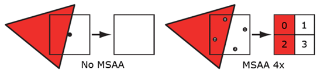

图形学中的抗锯齿方法简谈
GAMES101当中有提到在光栅化阶段的抗锯齿方法，但讲得比较宽泛，希望通过这篇文章能够更细致地了解图形学中的抗锯齿方法，对于反走样技术有更深入的理解
锯齿产生的原因
渲染从本质上讲，是一个采样的过程，锯齿的产生其实根本原因就是采样不足导致的，这要首先提到频率图。在频谱图中，频域的中心为低频信号，四周为高频信号，从频率的角度来看，采样即为不断重复频域上的内容。

当我们采样的频滤不足时，信号与复制信号发生了混叠，从而导致了锯齿的出现。

根据原因，我们也能够很容易得出抗锯齿的办法：
①提高采样频率
②去除高频信号(将频谱图混叠部分去除)，即对图象模糊处理，再进行采样
SSAA(super sample anti-aliasing)
SSAA是一种较为原始的抗锯齿方法，锯齿出现的原因不是因为采样频率不够吗，那我们就提高采样频率，目标要1920×1080的分辨率，我们就将场景渲染至3840×2160的分辨率，之后再将渲染图片放缩为1920×1080，问题不自然就迎刃而解了嘛。
再详细一些，SSAA对每一个像素取n个子采样点，对每一个子采样点分别着色计算，最后对每个子采样点的颜色求平均，得到该像素点的颜色值。

方法确实没错，得到的效果也十分可观，但是问题也就来了：每一个像素的开销变为了原来的n倍，性能的开销急剧增大。正因如此，SSAA难以应用在3D场景当中，但是在2D渲染中，这种简单粗暴的方法仍然有一席之地。
MSAA(Multisampling Antialising)
MSAA只计算每个像素的颜色，而对于那些子采样点只计算一个覆盖信息（coverage）和遮挡信息（occlusion）来把像素的颜色信息写到每个子采样点里面。每个子像素都有自己的颜色、深度模板信息，并且每一个子采样点都是需要经过深度和模板测试才能决定最终是不是把像素的颜色得到到这个子采样点所在的位置，而不是简单的作一个覆盖测试就写入颜色。
覆盖信息可以通过做叉积来得到，遮挡信息可以通过z-buffer得到，两者一起决定了一个图形的可见性。
就光栅化而言，MSAA跟SSAA的方式差不多，覆盖和遮挡信息都是在一个更大分辨率上进行的。对于覆盖信息来说，硬件会对每个子像素根据采样规则生成n的子采样点。接下来的这张图展示了一个使用了旋转网格（rotated grid）采样方式的子采样点位置。

三角形会与像素的每个子采样点进行覆盖测试，会生成一个二进制覆盖掩码，它代表了这个三角形覆盖当前像素的比例。对于遮挡测试来说，三角形的深度在每一个覆盖的子采样点的位置进行插值，并且跟z-buffer中的深度信息进行比较。由于深度测试是在每个子采样点的级别而不是像素级别进行的，深度buffer必须相应的增大以来存储额外的深度值。在实现中，这意味着深度缓冲区是非MSAA情况下的n倍。
MSAA跟SSAA不同的地方在于，SSAA对于所有子采样点着色，而MSAA只对当前像素覆盖掩码不为0的进行着色，顶点属性在像素的中心进行插值用于在fragment程序中着色。这是MSAA相对于SSAA来说最大的好处。
虽然我们只对每个像素进行着色，但是并不意味着我们只需要存储一个颜色值，而是需要为每一个子采样点都存储颜色值，所以我们需要额外的空间来存储每个子采样点的颜色值。所以，颜色缓冲区的大小也为非MSAA下的n倍。当一个fragment程序输出值时，只有通过了覆盖测试和遮挡测试的子采样点才会被写入值。因此如果一个三角形覆盖了4倍采样方式的一半，那么一半的子采样点会接收到新的值。或者如果所有的子采样点都被覆盖，那么所有的都会接收到值。接下来的这张图展示了这个概念：

像SSAA一样，过采样的信号必须重新采样到指定的分辨率，这样我们才可以显示它。
这个过程叫解析（resolving）。在它最早的版本里，解析过程是在显卡的固定硬件里完成的。一般使用的采样方法就是一像素宽的box过滤器。这种过滤器对于完全覆盖的像素会产生跟没有使用MSAA一样的效果。好不好取决于怎么看它（好是因为你不会因为模糊而减少细节，坏是因为一个box过滤器会引入后走样（postaliasing））。对于三角形边上的像素，你会得到一个标志性的渐变颜色值，数量等于子采样点的个数。接下来的图展示了这一现象：

整个MSAA并不是在光栅化阶段就可以完全的，它在这个阶段只是生成覆盖信息。然后计算像素颜色，根据覆盖信息和深度信息决定是否来写入子采样点。整个完成后再通过某个过滤器进行降采样得到最终的图像。
参考文章：https://www.cnblogs.com/ghl_carmack/p/8245032.html#
FXAA(Fast Approximate Anti-Aliasing)
FXAA被用作最终渲染过程，该过程仅将渲染图像作为输入，并输出抗锯齿版本。主要思想是检测渲染图像中的边缘并将其平滑。此方法快速有效，但会使纹理细节模糊。
FXAA着色器中的大多数计算将依赖于从纹理读取的像素的亮度，以0.0到1.0之间的灰度表示。为此，将使用由公式L = 0.299 R + 0.587 G + 0.114 * B定义的亮度。 它是红色，绿色和蓝色分量的加权总和，其中考虑了我们的眼睛对每个波长的敏感度范围。
通过线性插值得到范围为[0,1]之间的浮点数的UV纹理坐标，并将其作为输入。
紧接着，我们需要检测图片的边缘部分，为此，我们要计算当前fragment及其四个相邻fragment的亮度，得到其中的最大和最小亮度，两者的差值体现了局部的对比度值。若对比度低于与最大亮度成正比的阈值，则不会执行抗锯齿操作；另一方面，由于在黑暗区域中的锯齿并不明显，所以如果对比度低于绝对阈值，那么也不会执行抗锯齿。在这些情况下，当前像素纹理输入的颜色即为输出。
之后对于判断为边缘的像素，再通过梯度计算，判断边缘为垂直还是水平的，从而判断边缘的方向。
下一步是沿着边缘的主轴线进行探索。在两个方向上步进一个像素，在新坐标处查询亮度，计算上一步相对于平均亮度的亮度变化。如果此变化大于局部梯度，则已在该方向上到达边缘的末端并停止。否则，继续将UV偏移量增加一个像素。一直进行迭代，直到达到边缘的两个末端，或者直到达到最大迭代次数。
接下来，计算在两个方向的每个方向上达到的距离，并找到最接近的末端。估计边缘长度，以及到边缘长度的距离到最接近的末端的比率。这提供了有关当前像素是否位于边缘中间或末端附近的提示。越靠近末端，最后施加的UV偏移就越大。
之后在3x3邻域上计算平均亮度。从中减去中心亮度并从第一步中除以亮度范围后，这将产生一个子像素偏移。与整个邻域上的范围相比，平均值和中心值之间的对比度差越小，面积越均匀（即没有单个像素点），并且偏移量也越小。
最后，在垂直于边缘的方向上相应地偏移UV，并在纹理中最后一次读取。
参考文章：[http://blog.simonrodriguez.fr/articles/30-07-2016_implementing_fxaa.html](
TAA(Temporal Antialiasing)
帧间抗锯齿技术，是通过加权混合相邻多帧达到抗锯齿效果，从理论上解释就是将计算量分摊（Amortized）至多帧的超采样
帧间抗锯齿技术的实现依赖于帧间相关性（frame-to-frame coherence）。我们看到的视频或者游戏画面，上一帧画面中绝大部分内容也会出现在下一帧画面中，通常是平滑过渡的，比较少出现突变。如图4所示，整个画面中除了黑色小球以外，整体画面并没有太大的变化，这就是所谓的帧间相关性。也正是因为受到帧间相关性地启发，才有了帧间抗锯齿技术。
帧间抗锯齿技术的核心思想就是将运算量分摊至多帧，任意一帧只计算一个像素点，随着t帧的累积，就有t个采样像素，再混合结果，就相当于做了t个子像素的超采样。当然，每帧中像素需要做一定的抖动(Jitter)，不然不同帧相同位置的像素值就完全一样，也就没有了分摊多帧的意义。通过对像素分摊至多帧的超采样，来提高采样效率，达到缓解锯齿的目的。

尽管通过分摊超采样的方法，将计算量分摊到了不同帧，但是保存多帧也是不切实际的。那就有了只混合相邻两帧的思路，本篇文章分别称之为当前帧和历史帧（History Frame）。若当前帧的像素值是St(p)，前t-1帧的历史帧像素是f{t-1}(\pi_{t-1}(p))，将它们加权混合就得到分摊多帧超采样得到的结果：
ft(p)=(\alpha)S_t(p)+(1-\alpha)f{t-1}(\pi_{t-1}(p))(1)
称这种方法为指数平滑滤过(Exponential Smoothing Filter)，其中，α是一个加权值，称为指数平滑系数，可以是一个固定值，也可以是一个自适应变化的值。它有点类似于累积缓存器(Accumulation Buffer)的原理，不断累积结果。后面会解释，为什么这种指数平是合理的。
在实际应用中，画面并不是完全静止的，镜头在运动、模型在动，例如当前帧模型上的一个像素点位于(100, 520)，它在历史帧对应的位置可能是(99,530)。那么，我们就需要计算当前帧像素点在历史帧所处的位置，这个过程称为重投影（Reprojection）。如果只有镜头在动，那通过镜头的变换矩阵就可以计算出历史帧的位置；但是如果模型本身也在动，就需要计算模型顶点在当前帧与历史帧的位置差值，这个差值称之为运动矢量（Motion Vector）,可以把场景内运动模型的运动矢量存储在一个缓存中，这个缓存就称为速度缓存（Velocity Buffer）。重投影是基于当前帧和历史帧的视图投影矩阵与速度缓存，推算出屏幕上当前帧像素点的位置p在历史帧对应位置\pi_{t-1}(p)的过程。
至此，已经得到当前帧像素在历史帧中的位置，也就容易根据历史帧采样到历史帧像素值f{t-1}(\pi{t-1}(p))。但是，由于每帧渲染时有像素抖动、模型运动、渲染环境变化（例如光照条件）等，它们会导致渲染结果发生变化，此时得到的历史帧像素就可能不具参考性。如下图所示，当前帧位置p的像素，在历史帧对应位置的像素被遮挡住了，那么重投影得到的历史帧像素与当前帧像素无法对应。那么，就需要一个验证历史帧像素并修正的阶段，修正（Rectify）历史帧像素值，再将它代入等式1算出最终结果。

重新复盘下帧间抗锯齿技术的流程，对镜头进行抖动，渲染场景至主缓存中；如果模型发生运动，需要将渲染运动模型的运动矢量存至速度缓存。在一个TAA的后处理历程中，通过重投影获取当前帧像素在历史帧中的位置，获取历史帧像素，验证并修正历史帧像素，将历史帧像素和当前帧像素根据等式1加权混合，输出结果。